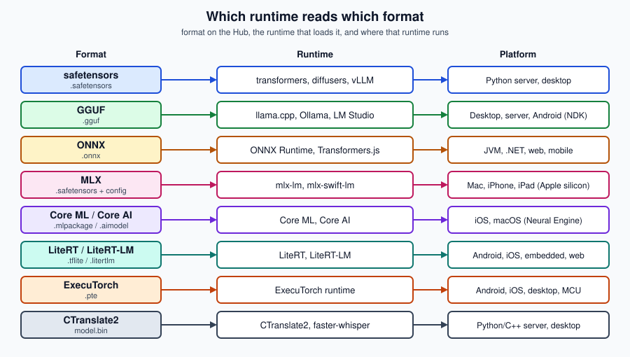

Model Formats
|
This content was generated with the assistance of AI and should be verified against the official documentation before being relied on in production. |
This page was written against safetensors 0.8.0, transformers 5.17.0, ONNX Runtime 1.30.0, mlx-lm 0.31.3,
llama-cpp-python 0.3.35, faster-whisper 1.2.1 with CTranslate2 4.8.2, coremltools 9.0, LiteRT 2.2.0 and LiteRT-LM
0.17.1, and the Apple Core AI documentation for iOS and macOS 27, as checked on 2026-09-30. A Hub model is a set of files;
the format of the weights decides which runtime can load it, whether loading is safe, and whether it fits a phone. The
same model is often published in several formats by different organisations, and you choose the one your runtime reads.
safetensors versus pickle
The original PyTorch checkpoint format (pytorch_model.bin, .pt, .pth) is a Python pickle. Unpickling
executes instructions in the file, so a malicious checkpoint can run arbitrary code the moment you load it: pickle can
import and call any function, for example exec. The Hub scans uploaded pickles and shows the list of imports, but
Hugging Face itself says that scan is not foolproof and that loading weights from authors you trust is your
responsibility.
safetensors is a tensor-only format: a JSON header describing names, shapes and dtypes followed by raw bytes. There
is nothing to execute, tensors can be memory-mapped without copying, and a single tensor can be read without loading the
file. It is the default on the Hub and what transformers prefers.
import torch
from safetensors import safe_open
from safetensors.torch import save_file
save_file({"embedding": torch.zeros((2, 2))}, "demo.safetensors")
with safe_open("demo.safetensors", framework="pt", device="cpu") as f:
for name in f.keys():
print(name, f.get_tensor(name).shape)
# A legacy checkpoint: only ever from a source you trust, and restrict what unpickling may build
state = torch.load("pytorch_model.bin", map_location="cpu", weights_only=True)Rules of thumb that hold across this sub-section:
-
Prefer repositories that contain
.safetensors; withhf download --include ".safetensors"you skip the pickle duplicates. -
Treat
trust_remote_code=Trueintransformersas running the repository author’s Python on your machine: enable it only for code you have read and pinned to arevision. -
Formats that are not pickle (GGUF, ONNX,
.tflite,.pte) carry no Python objects, but a runtime bug can still be exploited by a crafted file, so the same "trusted source and pinned revision" rule applies.
References: safetensors documentation and Hugging Face — Pickle scanning.
The formats at a glance
| Format | Extension | Read by | Where pre-converted variants live |
|---|---|---|---|
safetensors |
|
|
The original model repository |
GGUF |
|
llama.cpp and the tools built on it (Ollama, LM Studio, |
|
ONNX |
|
ONNX Runtime (Python, Java, C#, JavaScript, mobile), Transformers.js |
|
MLX |
|
|
|
Core ML |
|
Core ML on Apple platforms (CPU, GPU, Neural Engine) |
|
Core AI |
|
Apple’s Core AI framework (iOS and macOS 27 and later) |
Produced by converting a PyTorch model; see below |
LiteRT |
|
LiteRT on Android, iOS, embedded and web |
|
LiteRT-LM |
|
LiteRT-LM runtime for on-device LLMs |
|
ExecuTorch |
|
ExecuTorch runtime on Android, iOS, desktop and microcontrollers |
|
CTranslate2 |
|
CTranslate2, |
|
The figure shows the same information as a map from format to runtime to platform.

GGUF
GGUF is the single-file format of the GGML / llama.cpp family: it stores the tensors and a standardised block of
metadata (architecture, tokenizer, chat template, quantization type), so one file is enough to run the model. Most GGUF
repositories hold several quantization levels side by side (for example Q4_K_M, Q8_0 and f16), and you download
only one. The Hub has a viewer for GGUF metadata and tensors. Quantization types are explained on
Quantization for Inference and the runtime on
llama.cpp.
from llama_cpp import Llama
llm = Llama.from_pretrained(
repo_id="ggml-org/gemma-3-1b-it-GGUF",
filename="*Q4_K_M.gguf", # glob; picks one quantization
verbose=False,
)
out = llm.create_chat_completion(
messages=[{"role": "user", "content": "Name three Hub model formats."}]
)
print(out["choices"][0]["message"]["content"])Reference: Hugging Face — GGUF and llama-cpp-python.
ONNX
ONNX (Open Neural Network Exchange) is a portable graph format executed by ONNX Runtime, which has bindings for Python,
Java, C#, C++, JavaScript and mobile platforms. That breadth makes it the usual bridge to Spring Boot, .NET and web
apps. On the Hub the onnx-community organisation publishes ONNX exports of popular models, usually with several
precisions side by side (model.onnx, *_fp16.onnx, *_int8.onnx, *_q4.onnx) inside an onnx/ folder. Those
repositories are laid out for Transformers.js, and work with ONNX Runtime directly.
import onnxruntime as ort
from huggingface_hub import hf_hub_download
path = hf_hub_download("onnx-community/whisper-tiny.en", "onnx/encoder_model_int8.onnx")
session = ort.InferenceSession(path, providers=["CPUExecutionProvider"])
print([(i.name, i.shape, i.type) for i in session.get_inputs()])import { pipeline } from "@huggingface/transformers";
const asr = await pipeline("automatic-speech-recognition", "onnx-community/whisper-tiny.en");
const result = await asr("question.wav");
console.log(result.text);To convert a Transformers model yourself, use the optimum-onnx package and its optimum-cli export onnx command
(conversion is covered in
Conversion & Quantization). References:
ONNX Runtime documentation,
Transformers.js and
onnx-community.
MLX
MLX is Apple’s array framework for Apple silicon, and mlx-lm is its language-model package. MLX repositories contain
ordinary safetensors weights (often already quantized to 4 or 8 bits) plus configuration, tagged with library mlx.
The mlx-community organisation converts and publishes models in this form, for example
mlx-community/Qwen3-0.6B-4bit. They run only on Macs, iPhones and iPads with Apple silicon, through Python or
Swift (mlx-swift-lm).
from mlx_lm import load, generate
model, tokenizer = load("mlx-community/Qwen3-0.6B-4bit")
print(generate(model, tokenizer, prompt="Name three Hub model formats.", max_tokens=80))python -m mlx_lm.convert --hf-path Qwen/Qwen3-0.6B -qReferences: Hugging Face — MLX and mlx-lm.
Core ML and Core AI
Core ML is Apple’s long-standing on-device inference framework. A model is a .mlpackage directory (a
manifest plus a model description and a weights folder); Xcode compiles it to .mlmodelc, which is what the app loads.
Core ML can schedule work on CPU, GPU and the Neural Engine. The apple organisation hosts some Core ML models, and
other authors publish converted ones (for example Core ML encoders for Whisper). Models are created from PyTorch or
TensorFlow with coremltools.
import coremltools as ct
model = ct.models.MLModel("MobileViT.mlpackage")
print(model.get_spec().description)import CoreML
let config = MLModelConfiguration()
config.computeUnits = .all // CPU, GPU and Neural Engine
let model = try MLModel(contentsOf: compiledModelURL, configuration: config)Core AI is Apple’s newer framework for running neural networks on Apple silicon, introduced for iOS and macOS 27. Its
model asset is .aimodel. The documented workflow is to export a PyTorch model with torch.export, convert it with the
Core AI PyTorch Extensions (coreai-torch) to an unspecialised .aimodel, and optionally compile ahead of time with
coreai-build. In Swift the framework exposes AIModelAsset (an unspecialised asset) and AIModel (a specialised model
ready for inference). Because .aimodel files are produced by conversion rather than published as a standard Hub
download, plan on converting a Hub model yourself and check the current Core AI documentation for the exact API before
writing code against it. Using Foundation Models and Apple’s own APIs is on
Apple Intelligence and Machine Learning.
References: coremltools guide and Apple — Core AI.
LiteRT and LiteRT-LM
LiteRT is Google’s on-device runtime, the successor to TensorFlow Lite; its model files keep the .tflite extension.
LiteRT-LM is the runtime and file format for on-device LLMs: .litertlm files (and the older MediaPipe .task
bundles, which still appear in repositories) include the model, tokenizer and metadata for a specific chip class. MediaPipe’s
LLM Inference API is in maintenance, and Google points new work to LiteRT-LM. The litert-community organisation
publishes pre-converted models such as litert-community/gemma-3-270m-it, which carries several .litertlm files
(including per-chip variants) next to .task files. That repository is gated with automatic approval and has the Gemma
terms.
hf download litert-community/gemma-3-270m-it gemma3-270m-it-q8.litertlmThe file is then passed to the LiteRT-LM CLI, the Python API or the Kotlin, Swift and JavaScript APIs described in the
LiteRT-LM documentation; the Android-side integration is on Android (general Android development is on
Android apps). To convert your own
PyTorch model to .tflite use litert-torch (formerly ai-edge-torch). References:
LiteRT-LM overview,
LiteRT-LM on GitHub and
litert-community.
ExecuTorch
ExecuTorch is PyTorch’s runtime for edge devices. A model is exported ahead of time to a .pte program (with
backend delegates such as XNNPACK for CPU or Core ML for Apple devices) and then run by a small C++ runtime with bindings
for Android, iOS, desktop and microcontrollers. pytorch/Qwen3-4B-INT8-INT4 ships a model.pte next to its
ordinary files, and software-mansion/react-native-executorch-llama-3.2 ships several .pte variants for React Native.
from pathlib import Path
from executorch.runtime import Runtime
from huggingface_hub import hf_hub_download
pte = hf_hub_download("pytorch/Qwen3-4B-INT8-INT4", "model.pte")
program = Runtime.get().load_program(Path(pte))
print(program.method_names) # the exported entry points, e.g. "forward"
method = program.load_method("forward")
# method.execute(inputs) runs one call with tensors shaped as the export expectsReferences: ExecuTorch documentation.
CTranslate2
CTranslate2 is an optimised inference engine for Transformer models, and is the engine behind faster-whisper. Its
repositories hold a converted model.bin with vocabulary and configuration; the Systran organisation publishes
Faster-Whisper conversions such as Systran/faster-whisper-small (MIT). It runs on CPU and GPU with int8 and float16
compute types, which makes it a common choice for server-side transcription.
from faster_whisper import WhisperModel
model = WhisperModel("Systran/faster-whisper-small", device="cpu", compute_type="int8")
segments, info = model.transcribe("question.wav", beam_size=5)
print(" ".join(segment.text.strip() for segment in segments)) # segments is a generatorct2-transformers-converter --model openai/whisper-small.en \
--output_dir whisper-small-en-ct2 \
--copy_files tokenizer.json preprocessor_config.json \
--quantization float16References: faster-whisper and CTranslate2.
Choosing a format
Work backwards from the target: on an iPhone with a Neural Engine, Core ML (or MLX for LLMs); on Android, LiteRT or
LiteRT-LM (or ONNX Runtime); in a browser, ONNX through Transformers.js; on a Mac or Linux box for LLMs, GGUF; in
a Python backend, safetensors with transformers or CTranslate2 for speech; on a JVM or .NET backend, ONNX Runtime.
Prefer an official or well-known pre-converted repository over converting yourself, then check that repository’s card
for the base model and its licence (see Choosing Models & Licences).
Downloading only the files you need is covered on Hub Essentials.